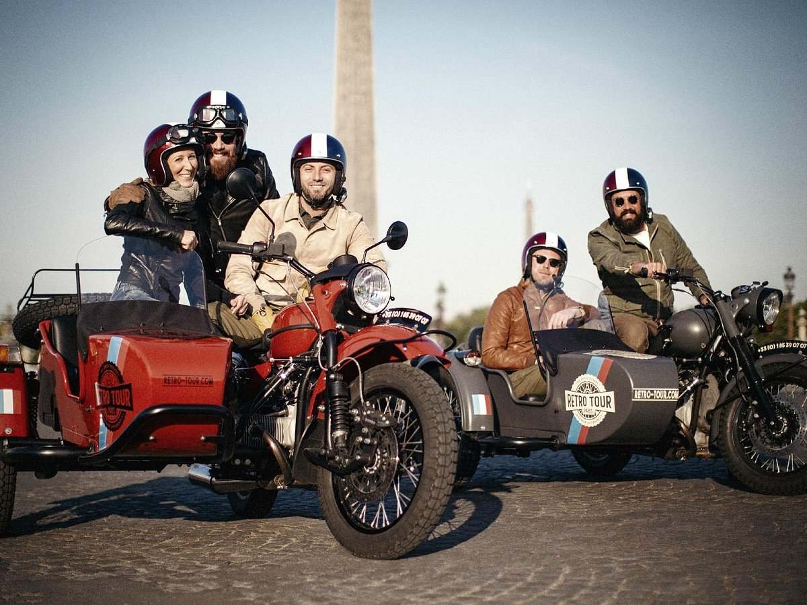

Para perderte en la tranquilidad del bosque no tienes que irte muy lejos de la ciudad.
A una hora y media al suroeste de Oslo, te espera Laagen, una casa entre los árboles al pie de un río. Aquí podrás alojarte en una casita elevada de madera para ti solo o en una cabaña-contenedor exclusiva con paredes de cristal.
Tómate un descanso del bullicio de Roma y experimenta la cocina italiana en la apacible campiña de Franscati. Visita una bodega familiar tradicional para degustar vinos tintos y blancos locales y aprende los secretos para hacer pasta perfecta desde cero durante una lección práctica. Termina tu visita con una cena con su propia pasta fresca cubierta con una salsa romana tradicional.
Explora las muestras inmersivas de teamLab Planets TOKYO, una atracción imprescindible si visitas Tokio. Descubre las instalaciones de arte digital con luces, sonidos y distintos materiales para que los cinco sentidos queden obnubilados.
Pasa una noche navegando por el Nilo en un paseo nocturno en barco que incluye cena y entretenimiento en vivo.
Contempla la puesta de sol sobre El Cairo, disfruta de una deliciosa cena buffet, escucha música en directo y asiste a un espectáculo de danza tradicional.
Descubre algunos de los sitios históricos notables de Ayutthaya en una excursión de un día desde Bangkok. Visita templos y palacios antiguos, así como el mercado flotante de Ayothaya, con un guía experto.

Explora París de una forma inolvidable en un recorrido al aire libre en un sidecar vintage. Este recorrido de aventura te permitirá atravesar la ciudad para ver lugares de interés tales como la Torre Eiffel, el Arco del Triunfo, el Barrio Latino o Ile de la Cite.
¿Te animas a probar alguna de estas experiencias? ¡Rellena nuestro formulario de contacto y nos pondremos en contacto contigo!